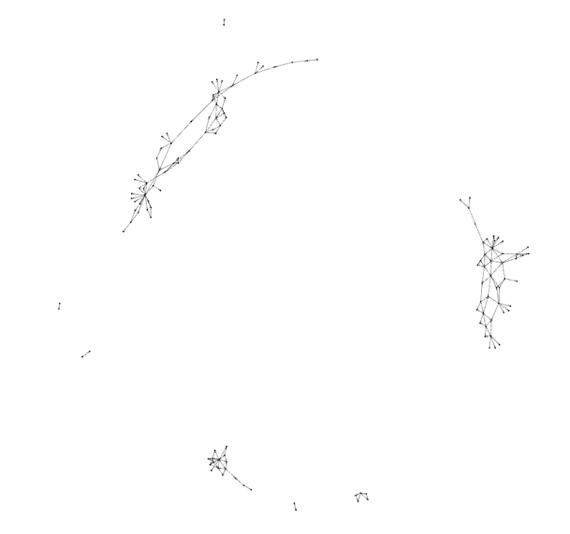

The ‘K’ in ‘Semantic Web’ stands for Knowledge
February 1st, 2017
Wouter Beek (w.g.j.beek@vu.nl)

How much structured data is there?
- WebDataCommons: 44.2B statements from Microdata, Embedded JSON-LD, RDFa and Microformats (5.6M PLDs).
- LOD Laundromat: 38,6B statements from data documents (650K documents).
- ~600 SPARQL endpoints
- We know there is much more out there.
lodlaundromat.org


Beek & Rietveld & Bazoobandi & Wielemaker & Schlobach “LOD laundromat: A Uniform Way of Publishing Other People’s Dirty Data” ISWC, 2014.
Best Linked Data Application Award 2015.
3rd prize, European Linkd Data Application Award.

Reproducing “Linked Data Best Practices” (Schmachtenberg 2014)
| Original | LOD Lab | ||||
|---|---|---|---|---|---|
| Prefix | #datasets | %datasets | Prefix | #documents | %documents |
| rdf | 996 | 98.22% | rdf | 639,575 | 98.40% |
| rdfs | 736 | 72.58% | time | 443,222 | 68.19% |
| foaf | 701 | 69.13% | cube | 155,460 | 23.92% |
| dcterm | 568 | 56.01% | sdmxdim | 154,940 | 23.84% |
| owl | 370 | 36.49% | worldbank | 147,362 | 22.67% |
Rietveld & Beek & Schlobach, “LOD Lab: Experiments at LOD Scale”, International Semantic Web Conference, 2015 (best paper award).
geopolitics:hasBorderWidth
{kind=link}
skos:exactMatch

foaf:knows

Graph A:
abox:store tbox:sells abox:tent .
abox:tent tbox:costs "¥150,000" .
abox:tent rdf:type abox:Product .
Graph B:
fy:aHup pe:ko9sap_ fy:jufn12 .
fy:jufn12 pe:oao9_ "Ufou" .
fy:jufn12 rdf:type fyufnt:tmffqt .
Information Theory (compression)
compress(SEMANTICS) + compress(NAMES)
- compress(SEMANTICS + NAMES)
= mutual information
{kind=link}
How generalizable is SW research?

ISWC 2014 Research Track:
- 17 datasets overall; avg. 2 per per paper
- Data was cleaned locally and deleted afterwards
Query the LOD Cloud with Frank
 Beek & Rietveld. “Frank: The LOD Cloud at your
Fingertips” ESWC, 2015.
Beek & Rietveld. “Frank: The LOD Cloud at your
Fingertips” ESWC, 2015.
Assumptions of traditional KR approaches:
- Quantity assumption
- Accessibility assumption
- Quality assumption
- Context-independence assumption
- Declarativeness assumption
- Consistency assumption
- Stability assumption
Thank you!
WWW: wouterbeek.com
Mail: w.g.j.beek@vu.nl